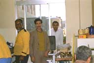

 肉屋の中には牛肉の大きな塊（１頭分位）が幾つかぶら下げてある、ここから今日食べる分を切り取って 焼いてくれる。路上に椅子とテーブルがセットされていて、その脇を通行人が通り過ぎていく。美味しそ うに焼けた肉が運ばれてきた、内心エジプトの肉料理だからそう美味しくはないだろうと思っていた。岩 塩とブラックペッパーをかけて、一口大に切る。フォークで刺して口に頬張る、次の瞬間 う・ま・い！ 下味が十分されて日本の牛肉以上の味である。しっかり牛肉を堪能させてもらった。半年後、応援の日本人が２人揃ったので再度同じ店で歓迎会を開いてもらった。肉料理が運ばれてくる、 岩塩とブラックペッパーをかけて、一口大に切る。フォークで刺して口に頬張る、次の瞬間 う？ ま・ ず・い！ エジプト人にこの間のは旨かったが、今日のはまずいおかしいと話した。彼らには味の差が分からなかっ たらしいが、私が今日のはまずく、この間のとは違うと言い張った。一人が店の人に聞きにいった、この 間来たときは旨かったが、今日のはまずいがなぜだと問いただした。店の担当者は、この間のは殺してか ら１週間経っていたが今日のは昨日殺した物である。だから味が違うと教えてくれた。 ・・・・・ん。古い方は美味しい？ちょっと信じられなかった。頭の中では今日のが古くて、この間のが 新しいのかなと考えてしまった。しかし、これは私の間違いで、エジプトの店の人が言った事が正しい事 を漫画「美味しんぼ」で知った。肉の旨味成分であるグルタミン酸が増えるらしく、１週間後が食べ頃に なるらしい。 オーストラリアでは日本の様な霜降りの牛肉は嫌われる。肉がおかしく気持ち悪く感じるらしい。オー ストラリアの脂のない肉に食べなれると、霜降り牛肉を食べると確かに脂が多すぎて気持ち悪くなる。ど この部位かよく分からなかったが、eye filletは塩こしょうで焼いただけで柔らかくて美味しかった。こ こでは超高級品である、値段は１ｋｇ２千円と超高級なのである。普通の肉は１ｋｇ５００円である。通常 のフィレで１ｋｇ１千円位だった。 ２００１年１０月 ２日 記
|